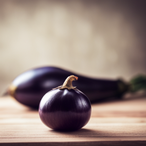
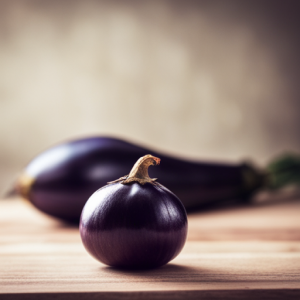

Fruits
Welcome to our farm, where we take pride in growing a variety of delicious and nutritious fruits. Our commitment to sustainable farming practices ensures that every bite of our fruit is bursting with natural flavor and goodness. From the orchard to your table, we offer a selection of fresh, hand-picked fruits that are perfect for snacking, baking, and cooking. Experience the taste of nature's bounty with our premium quality fruits.
Fruits for Sale


Apples
Oranges
Peaches
Strawberries
Blueberries
Raspberries
Cherries
Pears
Plums
Grapes
Watermelons
Cantaloupes

 
